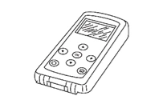

懸吊系統 - 道路車輪與輪胎 - 準備作業 - 準備作業
專用服務工具
N5050403T0000B00ENG
TechMate 工具的實際外型可能與本圖所示之特殊維修工具不同。
工具編號
（TechMate No.）
工具名稱
說明
MB993012
訊號 Tech II

CF100AI9AA00ENG
啟動並顯示 TPMS 胎壓感測器 ID
顯示 TPMS 胎壓感測器回報的胎壓
讀取 TPMS 故障碼
註冊 TPMS 胎壓感測器 ID
測試遙控鑰匙相對訊號強度
相容未來感測器
配備顯示器
已加入書籤
書籤數量過多。
請刪除後重新加入書籤。
×